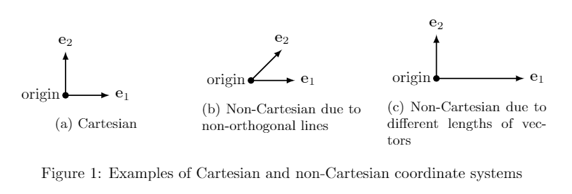

Yes, that makes the definition of location circular, but at some point we have to just agreeon some reference frame and then go from there. Latitude and longitude are based off theequator and prime meridian. Why is the prime
meridian the prime meridian? Not for anytechnical reason, but just because it has become the consensus. Some examples of other coordinate systems include polar coordinates in 2-D, and sphericalor cylindrical coordinates in 3-D. Or, Figure 1 shows some coordinate systems that can beobtained with non-orthonormal basis vectors in 2-D.
Latitude/Longitude, as used by GPS, isa common, non-Cartesian coordinate system and reference frame.2 Coordinate Systems, Reference Frames, and Vectors
What is a location? When we want to describe to someone else where something is, there are several ways we can do this. One might be to give them an address, e.g. 4457 Anise Dr, El Paso, TX 1. Or, we might give directions
like "down the road about a mile and then to the left." Or, we could give them a latitude and longitude so they can plug it into their GPS.
All of these methods for describing location have one thing in common: they are relative to something else. The address gives a house number, but that number only makes sense on a given street. 4457 is useless without the rest of the
address. Also, addresses on a street go up when going in a particular direction, implying a "0" location (typically a spot in downtown). Similarly, "down the road about a mile" implicitly assumes "starting from where you are." Latitude and
longitude are in relationship to the equator and the prime meridian. The first question that has to be answered for any location information is "In relationship to what?" 2 The answer to this question is what we call the origin.
What these methods do not have in common is how you describe getting from the origin to the desired location. Because math and numbers are really useful, we would like a way to take a set of numbers (a vector) and have that describe a
location in relationship to the origin. Formally, the method for taking a set of numbers and turning it into a relative location is called a coordinate system.

While there are many possible coordinate systems, we will focus solely on Cartesian coordinate systems. 3
Cartesian coordinate systems use an orthonormal (orthogonal and unit length) set of vectors (the coordinate basis) emanating from the origin that completely characterize the location of any object in that coordinate system. By
assigning one number in the location vector to each basis vector, we can express any location as the weighted sum of basis vectors. Figure 1 shows examples of vectors that define a two-dimensional (2-D) coordinate frame, but only one of them
is a Cartesian due to the vectors being both orthogonal and unit length.
While defining our coordinate system to be Cartesian means that there will be a set of orthonormal vectors defining coordinates, which set of vectors has not yet been defined. This decision of which set of vectors and their
origin will be used is referred to as the reference frame. By defining both the coordinate system and the reference frame, the complete mapping of numbers to locations is defined. Combined, we refer to this as a coordinate
frame. In this paper, we always assume this means a Cartesian coordinate frame unless specifically stated otherwise.
2.1 Vectors
Once a Cartesian coordinate frame is defined, a simple vector can be used to define the location of any object within that coordinate frame. For example, the vector [2,1] would mean to move 2 units along the first axis
(e1) and 1 unit along the second axis, (e2). Note that because this is a Cartesian coordinate system, the mapping between locations and vectors is exactly one-to-one. (The vector [2,1] represents only one
location and each location maps to exactly one vector.)
Vector notation: From here on, unless explicitly stated, we assume all vectors represent a location in a Cartesian coordinate frame. Furthermore, to simplify notation, when describing a vector we will bold-face it
(e.g., x) and put a superscript on it that refers to what coordinate frame it is in. So, we might have my (m) coordinate frame and your (y) coordinate frame. When I want to give the location for object x, I will give
locations in my coordinate frame and denote that location as xy. When you give the location for the same object in your coordinate frame, it will be xy. Note that the numerical values in the two vectors
may be very different, even though they refer to the same location. Let's now discuss how to transform between coordinate frames in two-dimensions.
← Previous
Next →